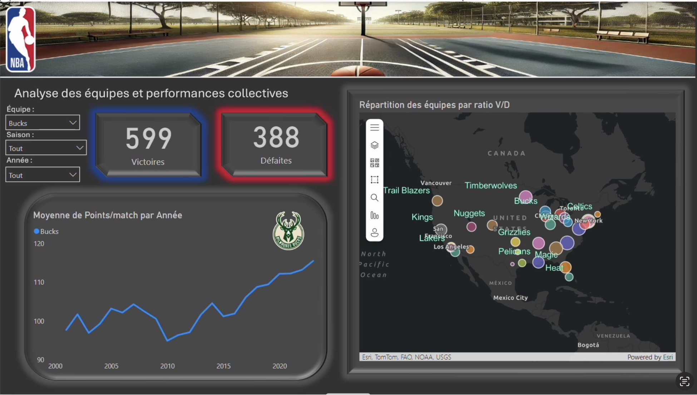
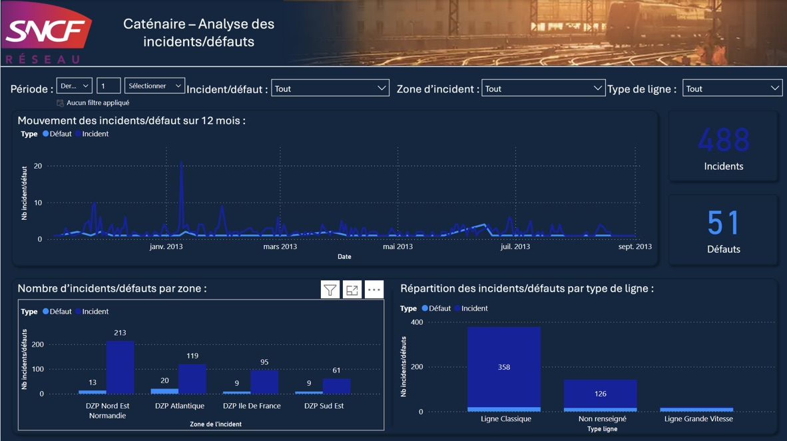
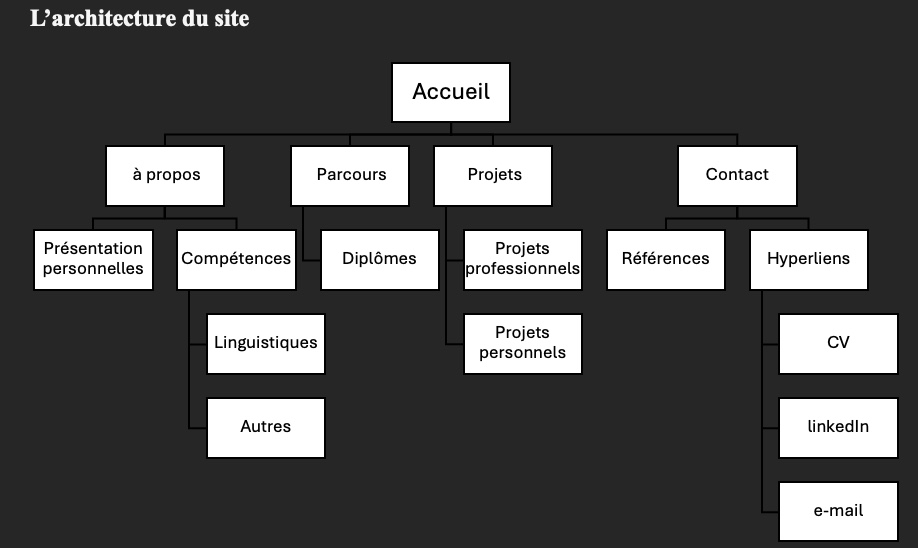

Data management
ETL, contrôle qualité, structure de données, préparation analytique.
En recherche d'une alternance en Data, Business Intelligence ou Systèmes d'Information Looking for an apprenticeship in Data, Business Intelligence or Information Systems
Je conçois des tableaux de bord Power BI, structure les données et crée des indicateurs pour aider les équipes métier à piloter leur activité. I design Power BI dashboards, structure data and build indicators to help business teams monitor their activity.
01 / PROFILE
Je suis Justin Walme, étudiant en troisième année de BUT Science des Données. Mon parcours combine formation statistique, projets appliqués et expérience en entreprise autour de la Business Intelligence. Chez IMMO Mousquetaires, je participe au développement de dashboards Power BI, à l'automatisation de flux ETL avec Power Query, à la modélisation des données et à la création de KPI en DAX.
Je suis également admissible au Master Management des Systèmes d'Information et des Data à l'EMLV, une poursuite d'études qui correspond à mon envie de croiser vision métier, pilotage SI et exploitation avancée de la donnée.
Dans cette continuité, je suis actuellement en recherche d'une alternance pour poursuivre mon développement sur des missions de BI, de préparation de données, de reporting et de pilotage par la donnée.
Mon projet professionnel est d'évoluer vers des fonctions liées au pilotage des systèmes d'information et de la donnée : consultant BI, analyste SI ou chef de projet data. J'aime relier la technique à la décision : nettoyer, structurer, mesurer, visualiser, puis expliquer.
I am Justin Walme, a third-year Data Science student. My background combines statistical training, applied projects and professional experience in Business Intelligence. At IMMO Mousquetaires, I contribute to Power BI dashboards, ETL automation with Power Query, data modeling and DAX KPI creation.
I have also been admitted to the Master's program in Management of Information Systems and Data at EMLV, a path aligned with my goal of combining business vision, information systems management and advanced data use.
In that continuity, I am currently looking for an apprenticeship to keep developing through BI, data preparation, reporting and data-driven management missions.
My professional goal is to move toward roles connected to information systems and data management: BI consultant, IS analyst or data project manager. I enjoy connecting technical work to decision-making: cleaning, structuring, measuring, visualizing and explaining.
ETL, contrôle qualité, structure de données, préparation analytique.
Power BI, Power Query, DAX, modélisation, préparation des données, reporting et expérience utilisateur.
Python, SQL, R, DAX et langage M, avec une utilisation forte en complément de la BI notamment sur la préparation des données lourdes.
Restitution orale, rédaction de rapports et accompagnement des utilisateurs.
02 / PERSONAL SIGNALS
Des passions qui nourrissent ma curiosité, ma discipline et mon ouverture.
Passions that fuel my curiosity, discipline and openness.
Design, culture et attention portée aux détails.
Design, culture and attention to detail.
Tennis et entraînement en salle pour la régularité et le dépassement de soi.
Tennis and gym training for consistency and self-improvement.
Découvrir de nouveaux environnements, cultures et perspectives.
Discovering new environments, cultures and perspectives.
03 / VALUE
Créer des tableaux de bord Power BI lisibles et utiles aux métiers.
Create clear and useful Power BI dashboards for business teams.
Nettoyer, structurer et fiabiliser les données.
Clean, structure and improve data reliability.
Construire des indicateurs DAX cohérents.
Build consistent DAX indicators.
Automatiser des traitements avec Power Query.
Automate data preparation with Power Query.
Traduire un besoin métier en reporting exploitable.
Turn business needs into usable reporting.
04 / TECH STACK
05 / DATA PIPELINE
Bases solides en mathématiques, logique et raisonnement statistique.
Strong foundations in mathematics, logic and statistical reasoning.
IUT Paris Rives de Seine - 2023 à aujourd'hui
ETL, modélisation, visualisation, Python, R, SQL et projets appliqués.
ETL, modeling, visualization, Python, R, SQL and applied projects.
IMMO Mousquetaires - 10/2024 à 09/2026
Développement de dashboards Power BI, schémas en étoile, flux ETL Power Query, mesures DAX et collaboration avec les équipes métier.
Power BI dashboards, star schemas, Power Query ETL flows, DAX measures and collaboration with business teams.
06 / PROJECTS

Dashboard Power BI complet intégrant nettoyage, modélisation, mesures DAX et analyse comparative des équipes et joueurs NBA.
Complete Power BI dashboard including data cleaning, modeling, DAX measures and comparative analysis of NBA teams and players.

Tableau de bord Power BI sur les incidents matériels SNCF : nettoyage des données, suivi des temps de résolution, analyse des défaillances et construction d'indicateurs de pilotage.
Power BI dashboard on SNCF equipment incidents: data cleaning, resolution time monitoring, failure analysis and management indicators.

Tableau de bord interactif sur l'insertion des diplômés : taux d'emploi, secteurs, rémunérations, poursuite d'études et indicateurs de décision.
Interactive dashboard on graduate employment: employment rates, sectors, salaries, further studies and decision-making indicators.

Rapport Power BI sur l'évolution du Bitcoin : tendances historiques, variations, volatilité et indicateurs financiers interactifs.
Power BI report on Bitcoin evolution: historical trends, variations, volatility and interactive financial indicators.

Conception d'un portfolio numérique responsive : structure de page, ergonomie, accessibilité, identité visuelle et mise en valeur des projets.
Design of a responsive digital portfolio: page structure, usability, accessibility, visual identity and project presentation.
Projet de communication combinant recherche, storyboard et montage pour déconstruire un stéréotype sur l'apprentissage des langues.
Communication project combining research, storyboard and editing to challenge a stereotype about language learning.
07 / CONTACT